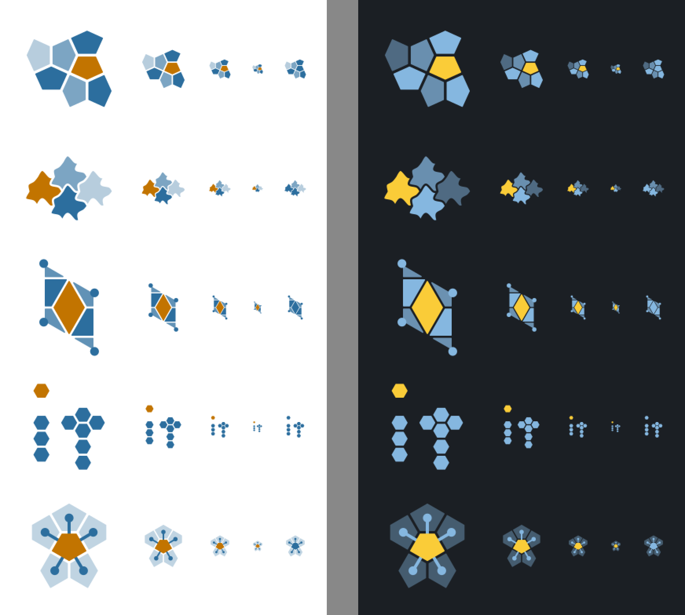
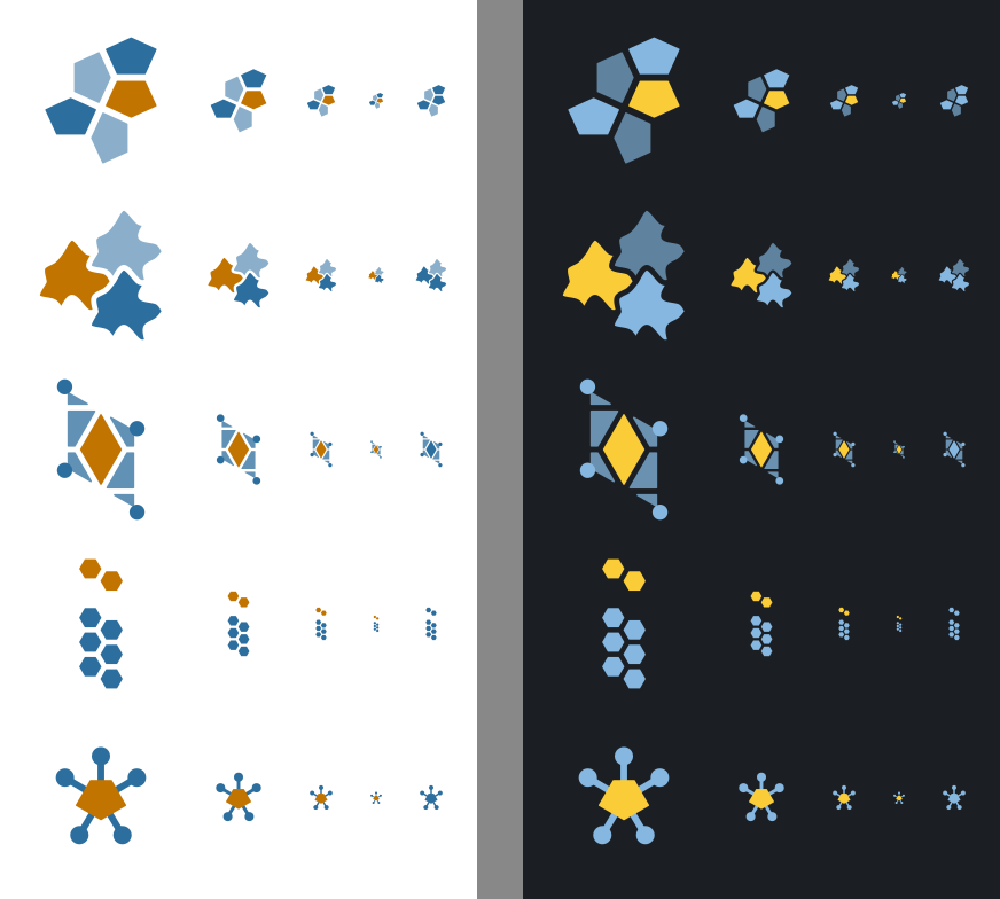
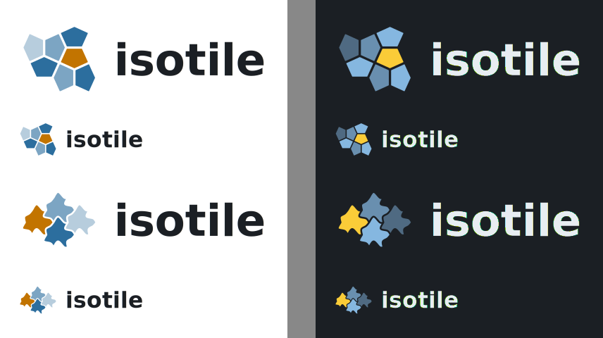

Five mark concepts for isotile (a pentagon tiling patch, interlocking curved tiles, a lattice cell, an it monogram of hexagon tiles, one tile with its neighbor links), drawn in the carto-flow palette from real isotile geometry and shown at 128, 64, 32 and 16 px on the light and dark surfaces and in one color. At 16 px only the simplified favicon variants of the neighbor-links and lattice-cell marks keep a clear amber shape; the tile patches become a cluster of specks with one amber speck, and the monogram does not hold. The recommendation is the pentagon patch (a_patch, with the four-tile favicon variant a_patch_fav), ahead of the interlocking tiles; its weak point is that it is generic at 16 px.
marks.py <out_dir> writes <concept>-light.svg and <concept>-dark.svg for every concept and favicon variant, and lockup-<concept>-<variant>.svg for the two lockup drafts (committed in svg/). fig.py draws the figures. Tile outlines are isotile prototiles placed by fill_region; each tile is inset by a gap (shapely buffer) so the marks have real gaps and work on any surface. The tint of a blue tile is a fixed opacity level chosen from the tile's color index in the tiling.
| Concept | Idea | Geometry | At 16 px (full / favicon variant) | In one color |
|---|---|---|---|---|
a_patch | A patch of a pentagonal tiling, one tile amber, the others blue in three tints | Type 28 with the pentagon found by a numeric search (angles 114.4, 114.4, 90, 131.2, 90 degrees; a Cairo-like tiling, not claimed to be the Cairo tiling); the 7 tiles nearest a 4-valent vertex | Full: a cluster of specks, the amber one visible. Variant (4 tiles, gap 4.4): four separate pinwheel tiles, amber visible | The tints keep the tiles apart; the amber tile is lost among them |
b_escher | Interlocking curved tiles of one isohedral type, the signature image of tilings; one amber | Type 1 (six J edges, three free curves); curves built here from edge_transforms and edge_reversed, two control points per edge from a seeded generator (rand_spec(105, amp=0.5)); 4 tiles | Full: a lumpy cluster, the interlocking is invisible. Variant (3 tiles, gap 3.6): three leaf-like blobs, amber one distinct | Works as three silhouettes |
c_cell | The lattice parallelogram spanned by the two translations, cut into the pieces of the aspect tiles inside it, one aspect amber; lattice points as dots | Type 34 (three aspects), translation_u, translation_v, tile polygons clipped to the parallelogram | Full: a small diamond with fragments around it. Variant: amber diamond with corner dots, the tall parallelogram holds | The amber diamond becomes a blue diamond inside blue pieces; the fragments blur |
d_letter | it built from flat-top hexagons of the regular tiling, the dot of the i amber | Hexagon tiling (type 20) at lattice positions; i alone and a bold two-column i2 are also in svg/ | The i is two pixels wide and the t is a blob; the amber dot is the only readable element. The bold i variant is a column of dots | The dot is lost |
e_links | One tile (amber) with links to its edge neighbors | Type 29, TileSet.adjacency, centroids of the neighbors as nodes | Full: a flower-like cluster. Variant (no neighbor tiles, thick links, nodes r 6): an amber pentagon with five blue nodes, the most legible mark at 16 px | The blue hub with five nodes stays distinct |
a_patch, b_escher) read as tiles from 64 px up. At 32 px the gaps are one pixel or less and the tints carry the separation; at 16 px they are clusters. The favicon variants (fewer tiles, gaps 3.6 to 4.4 units of 96) are better at 16 px but still specks.b_escher is the closest to what people picture for tilings. Weak points: the curves come from a seeded random generator and the outlines read as leaves (maple or ivy), not as creatures; a hand-drawn tile could fix that. The curves are not from the library (isotile has no edge curves yet), so the mark would need a check once it has them.c_cell is the most direct statement of the library's vocabulary (cell, aspects, translation vectors), keeps a clear amber diamond at 32 px and has a working favicon variant. Its parallelogram is tall and narrow, so the mark does not fill a square, and it reads as a gem or diamond more than as a tiling.e_links is the most legible at small sizes in the favicon variant, but it reads as a network or molecule icon; the tiling is implied only by the faint neighbor polygons of the full version.d_letter fails: a letter made of hexagon tiles is a narrow column (the i has an aspect ratio of about 1:4.5), the t of hexagons looks like a cross, and neither survives 32 px.| Color | Surface | Ratio |
|---|---|---|
blue #2c6e9e | white | 5.48 |
amber #c27400 | white | 3.63 |
blue #85b7e0 | #1b1f24 | 7.77 |
amber #facc38 | #1b1f24 | 10.85 |
text #1b1f24 | white | 16.56 |
text #e8edf2 | #1b1f24 | 14.06 |
amber #c27400 next to blue #2c6e9e (light) | 1.51 | |
amber #facc38 next to blue #85b7e0 (dark) | 1.40 |
Both blues and the dark amber pass 4.5:1; light amber passes the 3:1 threshold for graphical objects (as in carto-flow) but not 4.5:1. Amber and blue are only 1.4 to 1.5 apart from each other, so the amber tile is told apart by hue, not lightness; the one-color column (blue only) checks that the shape alone still reads. The lighter blue tints (opacity 0.34 to 0.74) are decorative and have low contrast to the surface; no mark relies on them for its outline.
| Rank | Concept | 16 px | Distinct | Link to the library | Family with carto-flow |
|---|---|---|---|---|---|
| 1 | a_patch | medium (variant) | medium | a real tiling, one tile picked out | high: tiles and one amber piece |
| 2 | b_escher | weak | high | highest (Escher) | high |
| 3 | c_cell | good (variant) | high | cell and aspects | medium |
| 4 | e_links | best (variant) | medium (network icon) | adjacency | medium |
| 5 | d_letter | fails | medium | weak | low |
Recommendation: a_patch, with a_patch_fav as the favicon. It is built from an actual isotile tiling, has the structure of the carto-flow mark (blue pieces, one amber piece) and its favicon variant is still a recognizable tile cluster. Weak points: it is the most generic of the strong candidates (a pentagon cluster also reads as cells, a honeycomb or a panel pattern); at 16 px the tiles are 3 to 4 pixels and the amber tile is a speck, so the favicon works through the amber dot and the pinwheel silhouette, not through detail; the pentagon is a Cairo-like shape found by a numeric search; the blue tints rely on opacity and are dim on the dark surface. If a more characteristic mark matters more than favicon strength, b_escher is the alternative, at the cost of the leaf resemblance and a hand-tuned tile; if 16 px legibility matters most, c_cell_fav or e_links_fav are safer.
b_escher is not a designed shape; no creature-like tile was drawn, and the library has no edge curves to validate against.
Rows from the top: a_patch, b_escher, c_cell, d_letter (it), e_links. Left half light surface, right half dark surface. Columns: 128, 64, 32 and 16 px, then 32 px in one color (the amber tile drawn in the blue). Renders are 1:1, the figure is enlarged 2x with nearest-neighbor so the pixels stay visible.

The simplified variants of the same five rows (a_patch_fav: four tiles around a vertex, wider gaps; b_escher_fav: three tiles; c_cell_fav: wider gaps, small pieces dropped, larger corner dots; d_letter_fav: a bold i of two columns of hexagons; e_links_fav: no neighbor tiles, thicker links). Same columns and surfaces as the first figure.

Mark and wordmark isotile for the two strongest concepts (a_patch above, b_escher below) at 360 and 180 px wide, light surface left, dark surface right. The text is live DejaVu Sans Bold, a draft only.